Machine Learning
Design predictive models and intelligent algorithms using Python, Scikit-Learn and deep learning frameworks.
Hi, I am
a
Data Scientist | AI Engineer
Get To Know More
I am a Data Scientist and AI Engineer passionate about solving real-world problems using Artificial Intelligence, Machine Learning and Computer Vision.
My work focuses on smart mobility systems, anomaly detection, recommendation systems, OCR technologies and AI-driven solutions for African communities.
Beyond technology, I enjoy herbal hair care research, innovation, continuous learning and building impactful digital solutions.
B-Tech Electronic Communication Engineering | CPUT (2013) | South Africa
M-SC Data Science | NUST (expected May 2026) | Namibia
What I Do
Design predictive models and intelligent algorithms using Python, Scikit-Learn and deep learning frameworks.
XXXWork collaboratively in multidisciplinary teams delivering scalable AI-driven solutions.
YOLO object detection, OCR recognition systems and anomaly detection solutions for smart monitoring systems.
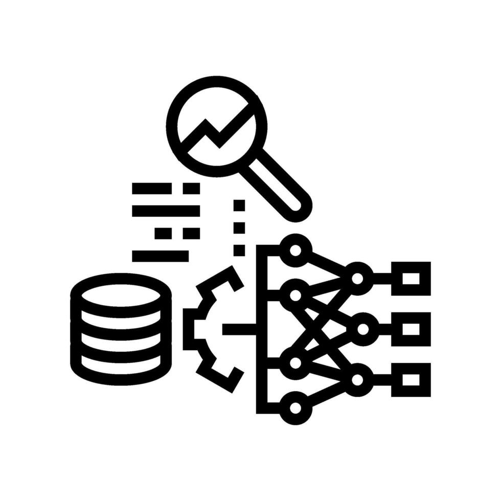
Transform raw datasets into insights using SQL, Pandas, Power BI and Tableau dashboards.
Build full-stack AI systems using FastAPI, Flask and modern frontend interfaces.
AI research focusing on smart cities, transport optimization, language technologies and automation.
Work collaboratively in multidisciplinary teams delivering scalable AI-driven solutions.
Designing, operating, and optimizing industrial processes to turn raw materials into finished products efficiently, safely, and sustainably. It focuses on improving production rates, quality, and cost-efficiency across industries by analyzing data and troubleshooting systems. .
Interactive rainfall analysis dashboard visualizing historical precipitation patterns and seasonal climate trends using exploratory data analysis and data visualization techniques.
Experience Learned: Strengthened skills in data cleaning, time-series analysis, visualization storytelling, and communicating environmental insights using dashboards.
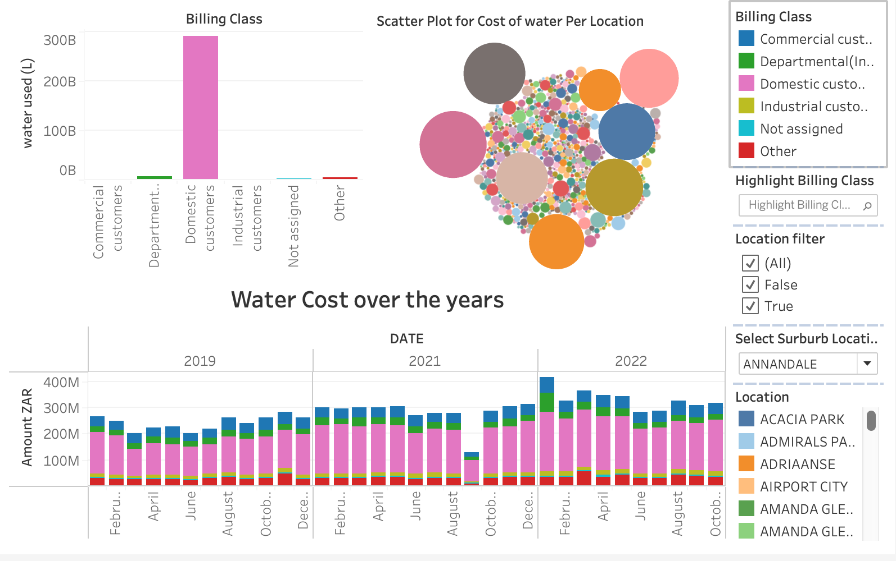
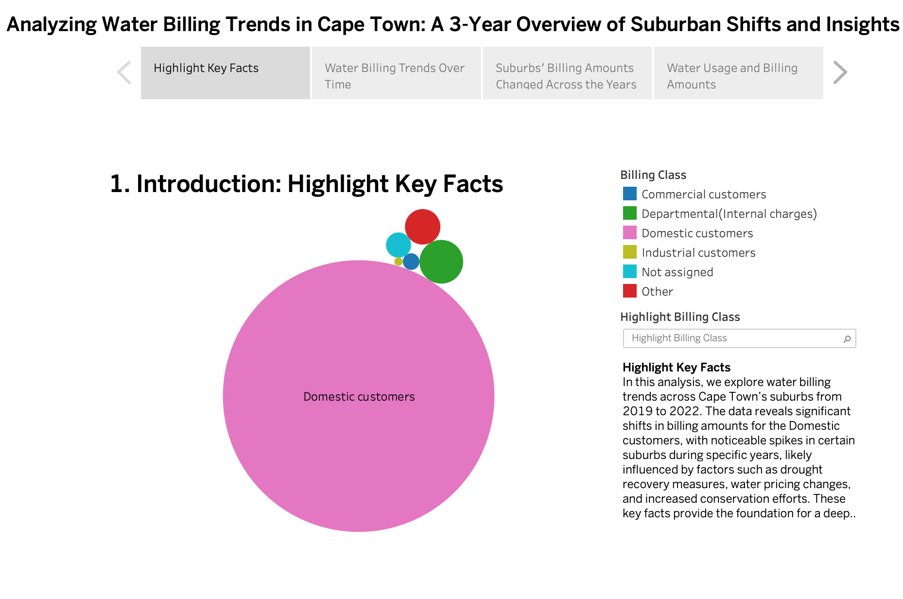
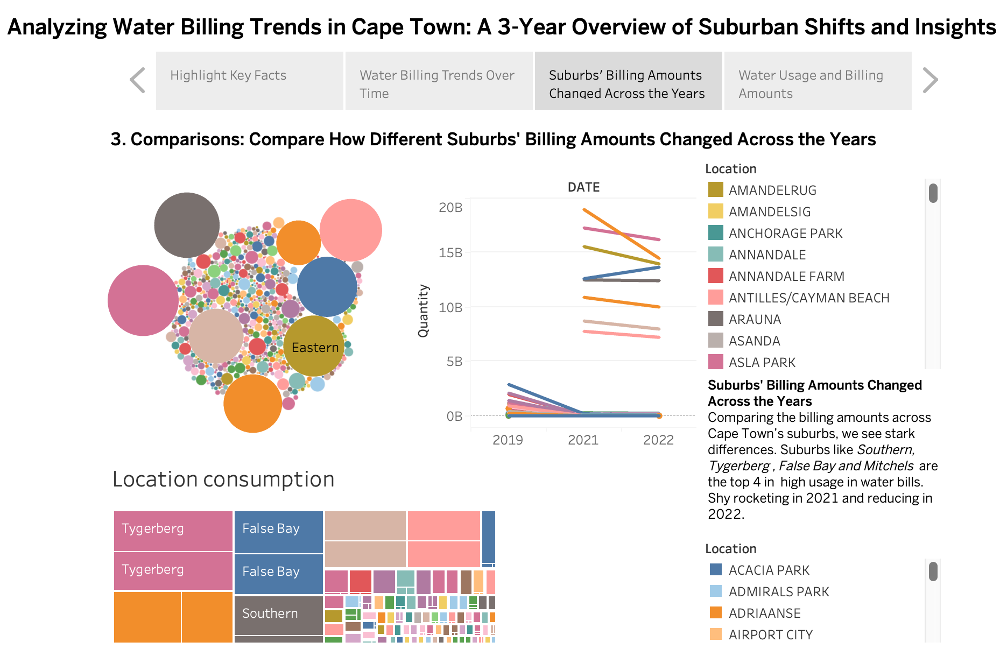
AI-driven hair care recommendation system.
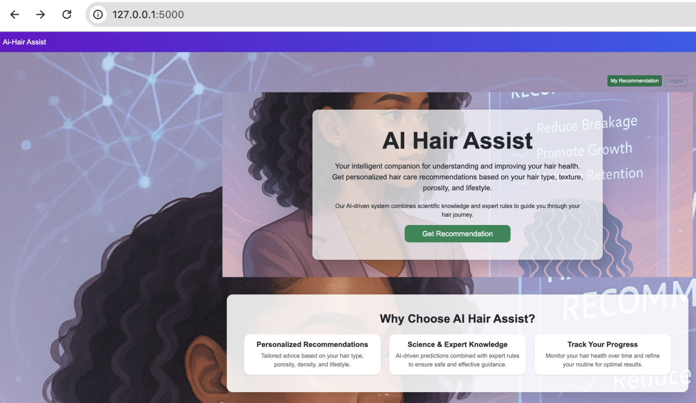
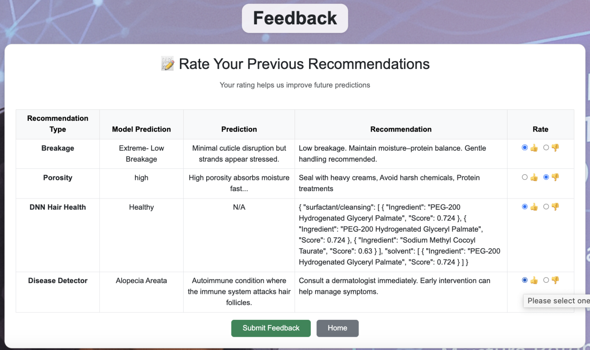
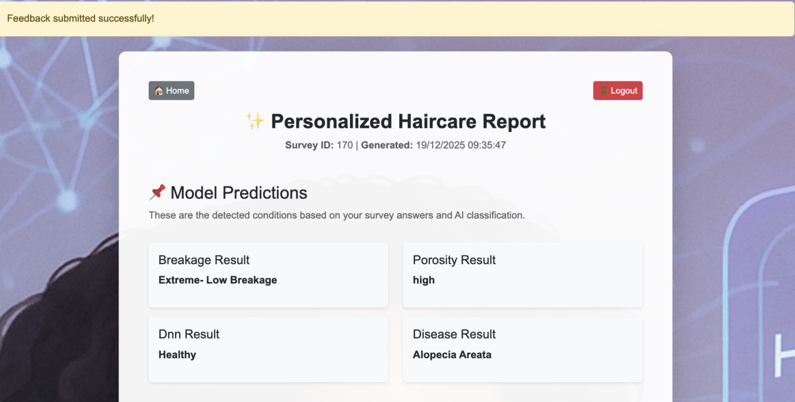
Exploratory analysis and classification.
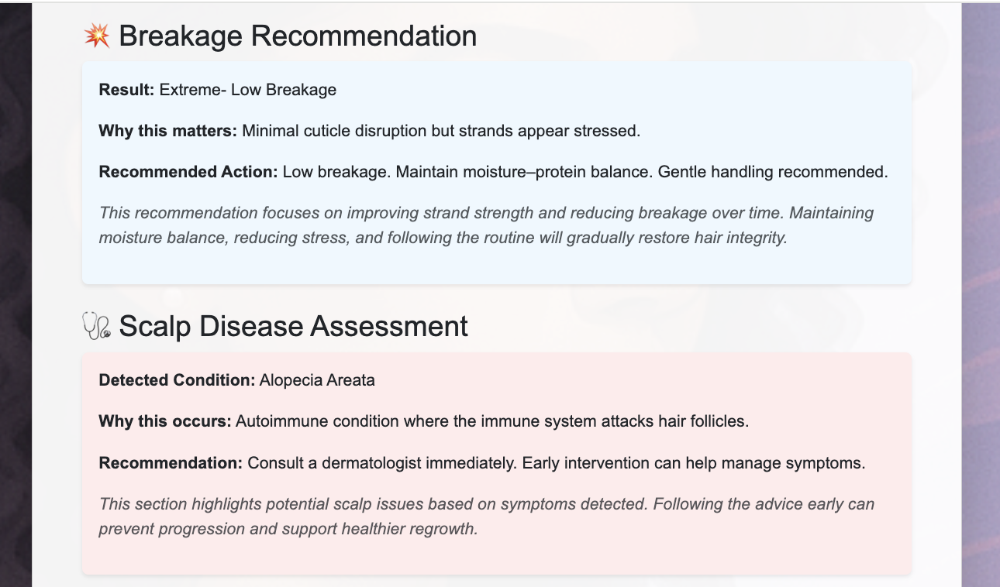
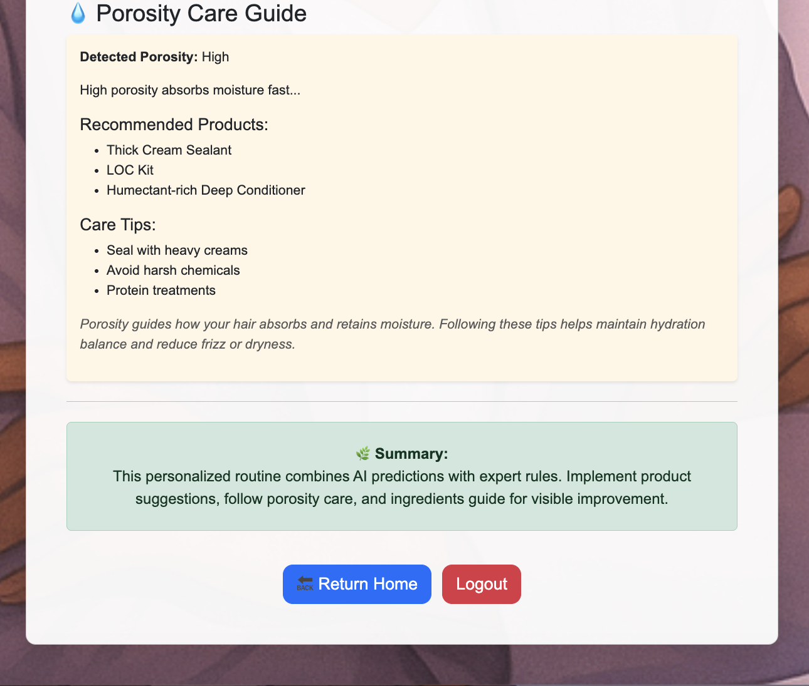
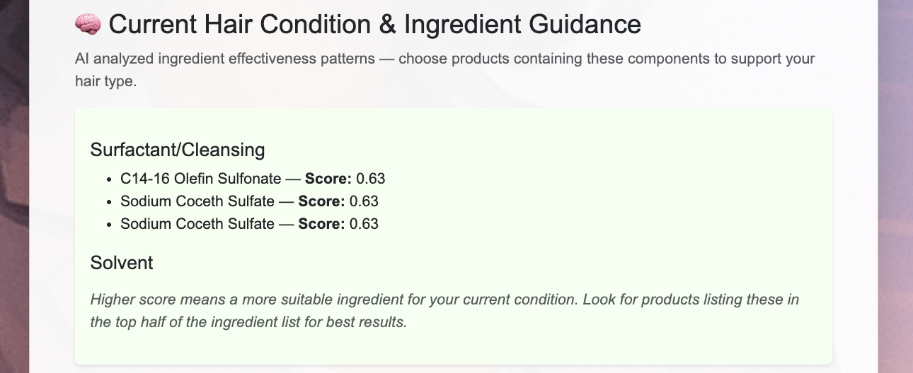
Early-stage breakage was most common. Black/African participants showed higher structural compromise.
Mixed-race participants demonstrated the highest damage levels.
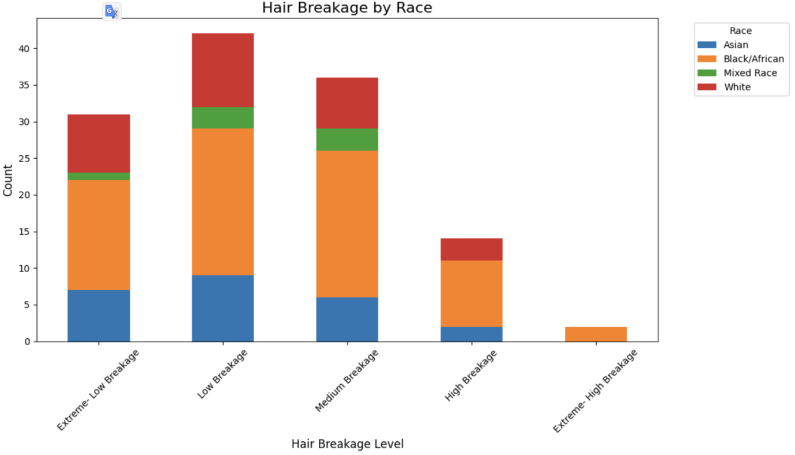
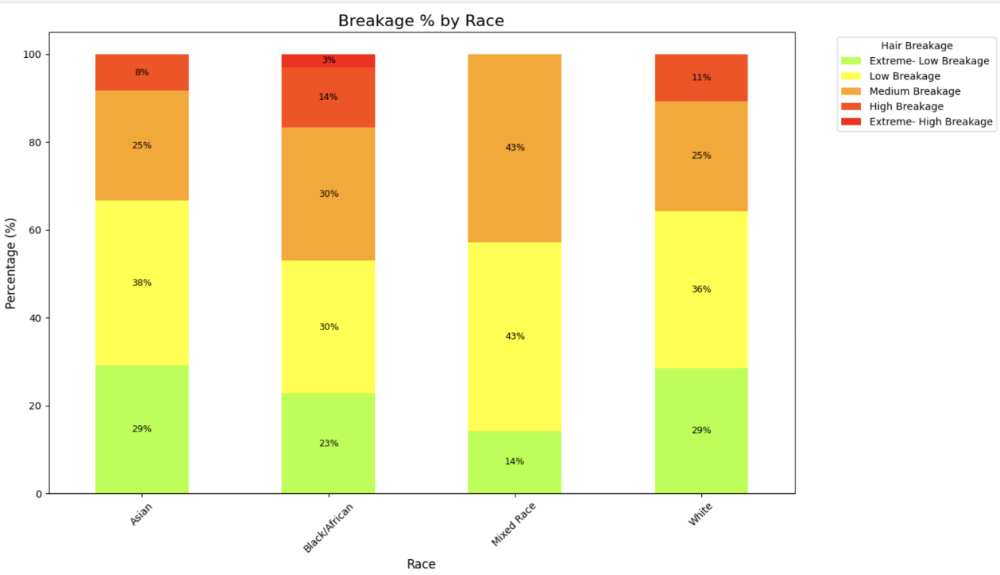

AI recommendation system designed to provide personalized herbal hair care advice based on ingredient properties, hair conditions, and user preferences using NLP and content-based recommendation techniques.
Experience Learned: Developed API deployment skills, NLP feature engineering, recommendation model development, and real-world dataset integration for personalized AI services.
Survey-based hair condition research involving statistical analysis, classification modelling, and demographic comparisons to understand hair damage patterns and contributing factors.
Experience Learned: Improved statistical reasoning, hypothesis testing, feature engineering, and communicating research findings through data storytelling and visualization.
Research-driven analysis identifying structural hair damage trends across different demographic groups. Early-stage breakage was most common, with higher structural compromise observed among African hair types.
Experience Learned: Developed research methodology skills, scientific reporting, comparative demographic analysis, and interpretation of biological data patterns.
Developed a distributed real-time data streaming pipeline using Apache Kafka to enable scalable communication between producers and consumers for high-throughput data processing.
Experience Learned: Gained experience in distributed systems, event-driven architecture, message queuing, and real-time data ingestion design for scalable analytics workflows.